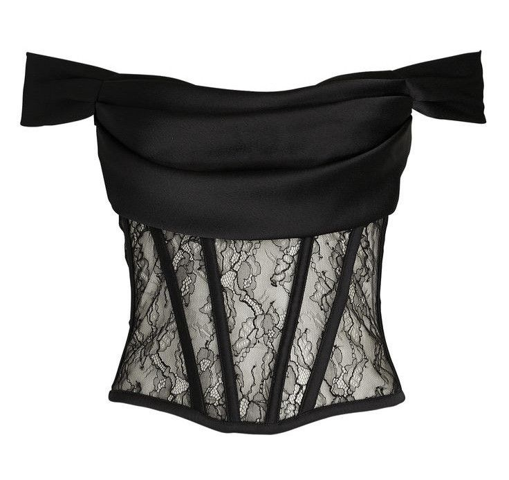
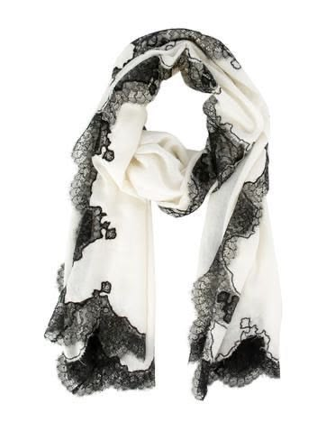

Момичета, ако сте свикнали да се криете зад оувърсайз пуловерите и изчистените минималистични визии – имам новина за вас. 2026 година идва с гръм и трясък, за да преобърне правилата на играта. След няколко сезона на "тих лукс" (който, нека бъдем честни, понякога беше просто скучен), дизайнерите най-накрая решиха да се забавляват отново.
Виждаме завръщане към класическата женственост, но пречупена през една много по-тъмна, мистериозна и леко провокативна призма. Готови ли сте за новите правила?
Абсолютната кралица: Дантелата
Ако трябва да изберем само една единствена дума, която да описва 2026 година, то това е дантела. Но забравете за онази нежна, невинна бяла дантела, която прилича на роклята на шаферка от 2010-та. Говорим за драматична, тежка и кутюр дантела!

Комбинацията от структурирани материи и фина дантела е задължителна.
Виждаме я навсякъде – от ръкавите на блейзърите, през прозрачни макси поли, до детайли по обувките. Най-актуалните цветове са "полунощно черно", кърваво бордо и изумрудено зелено. Трика тук е контрастът: носете фина дантелена блуза с грубо кожено яке или широк деним. Така не изглеждате сякаш отивате на бал, а сякаш току-що сте слезли от подиума в Милано.
Kорсетите са новото "малко черно рокля"
Да, точно така! Ако все още нямате поне един добре структуриран корсет в гардероба си, сега е моментът да поправите тази грешка. И не, не говорим за онези неудобни неща от 18-ти век, в които не можете да дишате.
Модерните корсети често са комбинирани с прозрачни панели или дантела (отново тя!). Как да ги носим в ежедневието? Хвърлете един корсет върху класическа, леко уголемена бяла риза. Стои брутално добре! Или го комбинирайте с панталон с висока талия и широко сако за перфектната вечерна визия за коктейли с момичетата.

Не се страхувайте да експериментирате с пластовете.
Аксесоарите: Драма и мащаб
Тъй като дрехите стават все по-впечатляващи, аксесоарите също не остават по-назад. Малките, едва забележими синджирчета отстъпват място на масивните бижута. Чокърите (особено тези от кадифе с голям метален или кристален акцент) са абсолютен хит.
А най-любимата ни микро-тенденция? Дантелените ръкавици. Добавете чифт прозрачни черни ръкавици към съвсем семпла визия и наблюдавайте как всички погледи се обръщат към вас.
Как да започнем?
Знам, че всичко това може да звучи малко плашещо, ако гардеробът ви е пълен предимно с бежово и сиво. Не е нужно утре да излезете облечени от глава до пети в черна дантела. Започнете с малки стъпки. Вземете си един красив топ с дантелен кант около деколтето. Купете си масивно колие. Позволете си да се почувствате малко по-дръзки тази година.
В крайна сметка, модата е точно за това – да експериментираме и да се забавляваме. Какво мислите за новите тенденции? Ще се радвам да прочета мнението ви във форума на JUXURY!